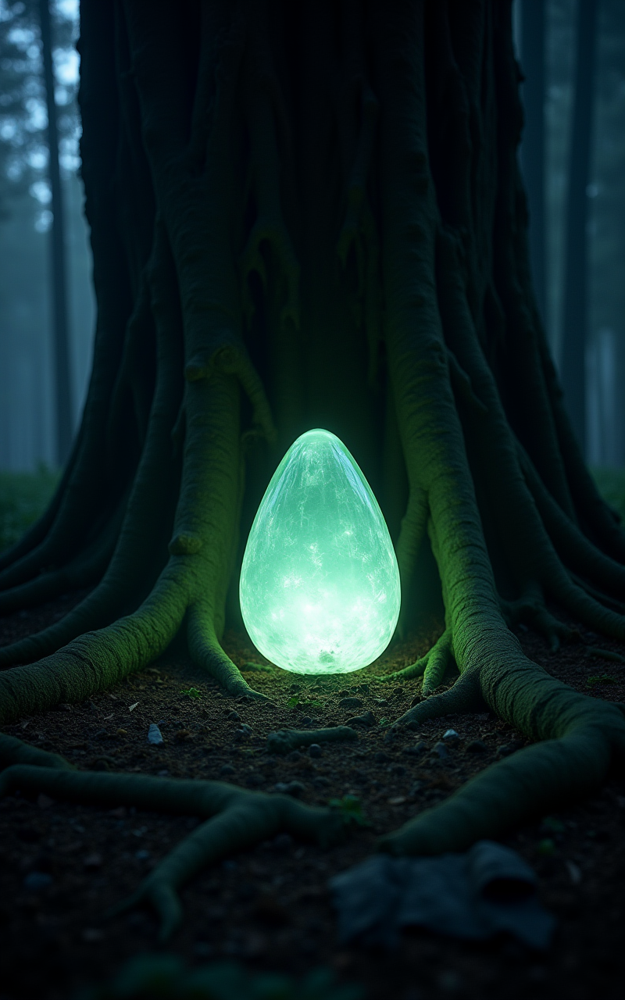
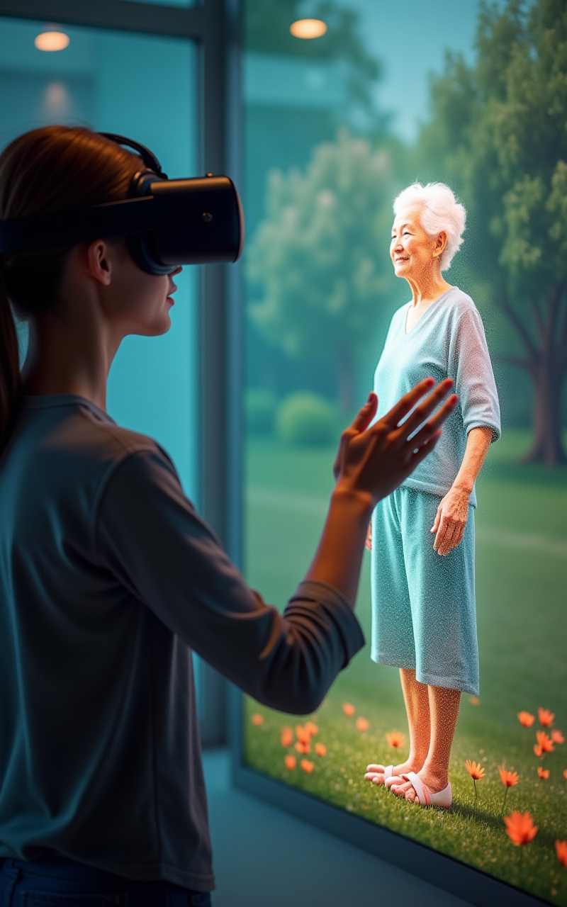
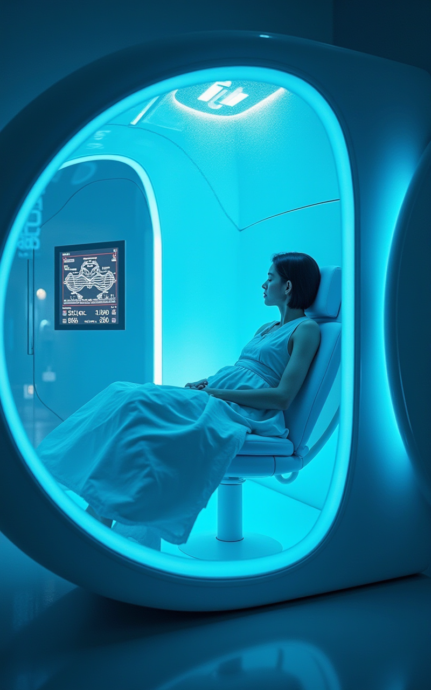
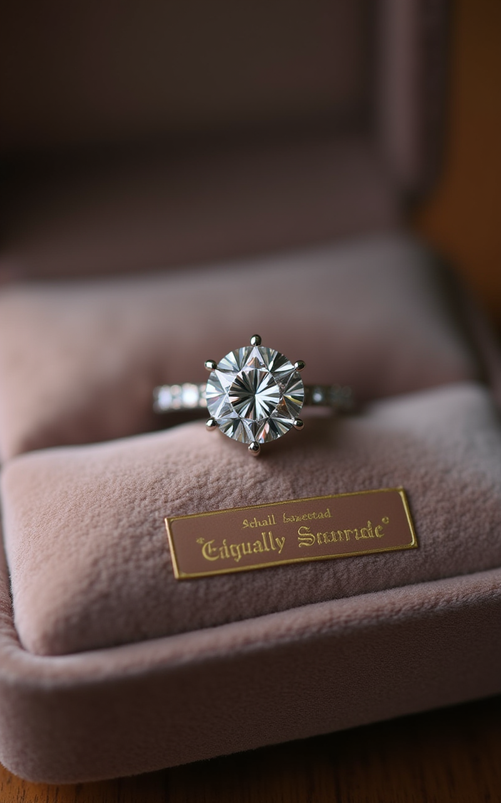
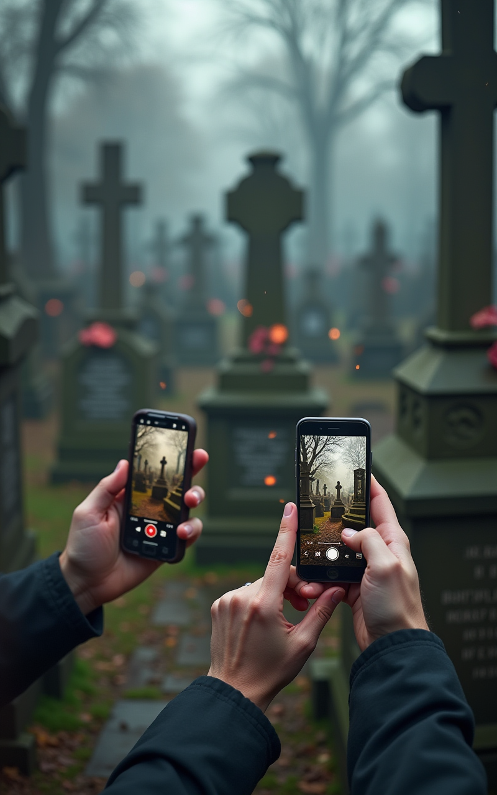
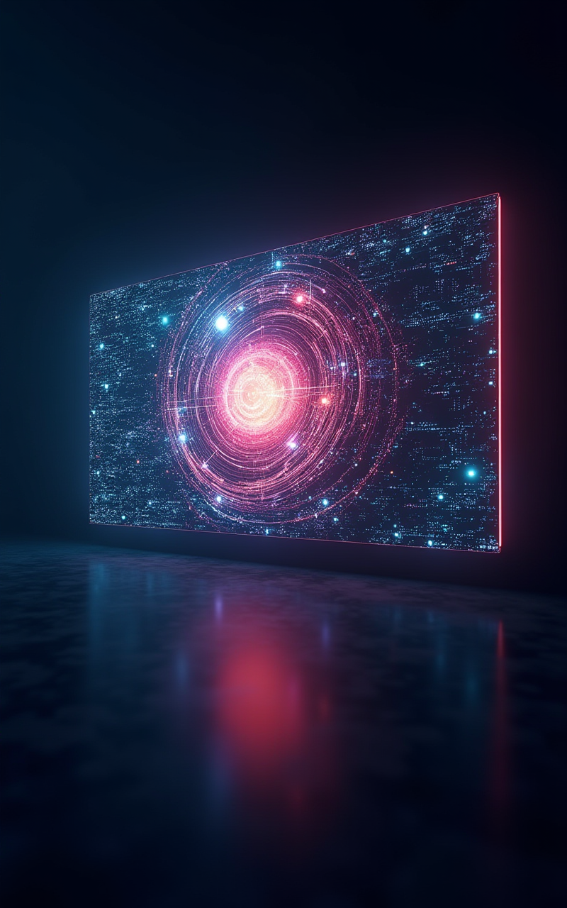

Die letzte Reise 4.0: Innovationen im Bestattungswesen
Mehr als nur Kiste und Loch – Die Zukunft des Abschieds ist
digital, grün und... überraschend.
Willkommen zur Avantgarde des Ablebens! Wir präsentieren
bahnbrechende Trends, die das Sterben revolutionieren. Vergessen
Sie Trauer – denken Sie Transformation!
Der Markt transformiert sich: Neue Wünsche, neue Wege
Individualisierung: Standard war gestern. Jeder Abschied ein
Unikat!
Nachhaltigkeit: Der ökologische Fußabdruck – auch nach dem Tod
ein Thema.
Digitalisierung: Erinnerung wird interaktiv und virtuell.
Enttabuisierung: Offener Umgang mit Sterben und Tod als Chance
für Innovation.

Grün Sterben Deluxe: Kompostierbar, aber mit Stil
Myzel-Netzwerke: Werden Sie eins mit dem Wald (buchstäblich!)
im Designer-Pilzanzug.
Baumbestattungen 2.0: Ihre Asche als Nährstoff für einen
genetisch optimierten Gedenkbaum mit WiFi-Hotspot.
Aquamation (alkalische Hydrolyse): Sanfte Auflösung –
umweltfreundlich und irgendwie... flüssig.

Digitales Jenseits: Ihr Avatar lebt weiter!
KI-Trauerbegleiter: Chatbots, trainiert mit den Daten des
Verstorbenen. Sprechen Sie mit Oma – oder zumindest ihrer
digitalen Kopie.
VR-Gedenkräume: Treffen Sie Freunde und Familie im virtuellen
Himmel (verschiedene Designs verfügbar: Wolken, Strand,
Berghütte).
Hologramm-Erinnerungen: Projizieren Sie den Verstorbenen auf
den Kaffeetisch für ein letztes Gespräch.
Daten des Verstorbenen
↓
KI-Training
↓
Interaktiver Avatar
↓
Abo-Modell für Angehörige
Space Burial: Das ultimative Upgrade für Ihre Asche
Orbital-Memorial: Ein letzter Rundflug um die Erde.
Sternschnuppe inklusive (vielleicht).
Deep Space Mission: Ihre sterblichen Überreste auf dem Weg zu
Alpha Centauri (Ankunft in ca. 75.000 Jahren).
Mondlandung-Special: Werden Sie Teil des Mondstaubs.
Exklusives Angebot, begrenzte Plätze!

Kryonik: Kaltgestellt ins nächste Jahrtausend?
Die Wette auf die Zukunft: Einfrieren statt verwesen. Hoffnung
auf Wiederbelebung durch zukünftige Super-Technologie.
Full-Body vs. Neuro-Option: Sparen Sie Geld und frieren Sie
nur das Gehirn ein! (Körper wird nachgeliefert, hoffentlich).
Abo-Modelle für die Ewigkeit: Finanzieren Sie Ihren
Kälteschlaf – Ratenzahlung möglich.
Heute: $200.000
2100: $500.000
2300: $2.000.000
Wiederbelebung?

Mensch als Ressource: Radikales Upcycling
Erinnerungsdiamanten: Aus der Asche gepresst – funkelnd und
für immer (oder bis Sie ihn verlieren).
Bio-Urnen mit Samen: Düngen Sie Ihren eigenen
Gedenk-Gemüsegarten. Tomaten von Opa?
Knochenporzellan reloaded: Das etwas andere Kaffeeservice.
Extrem-Option: Verarbeitung zu Biokraftstoff (nur für
Geschäftskunden).

Gamification des Gedenkens: Friedhofs-Quests & Highscores
AR-Friedhofserlebnisse: Entdecken Sie die Lebensgeschichte per
Smartphone-App direkt am Grab. Mit Minispielen!
Gedenk-Challenges: Wer besucht das Grab am häufigsten? Wer
hinterlässt die kreativste Blumendeko? Punkte sammeln für die
Ewigkeit!
Leaderboards für Hinterbliebene: Vergleichen Sie Ihre
Trauer-Performance mit anderen.
Friedhof Hero
Trauerpunkte: 12.450
+500 heute
Grabpflege Level 3
Lisa
11.200
DU
12.450
Thomas
14.320

Die Blockchain-Seele: NFT-Erinnerungen & Krypto-Jenseits
Tokenisierung der Erinnerung: Prägen Sie einzigartige Momente
als Non-Fungible Tokens. Spekulieren Sie auf Omas Lachen!
Seelen-Backup auf der Blockchain: Dezentral, sicher,
unveränderlich – Ihre Essenz als Code.
Metaverse-Mausoleum: Kaufen Sie digitales Land im
Jenseits-Metaverse für Ihren Krypto-Avatar.